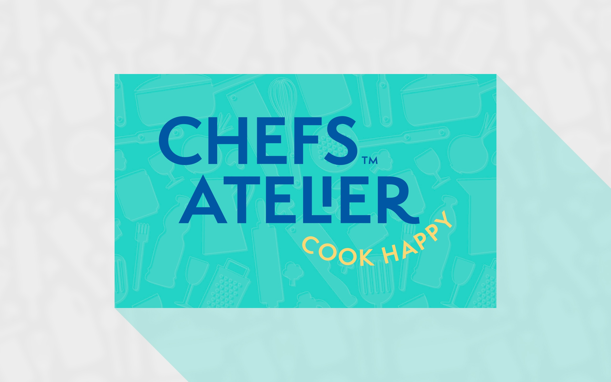
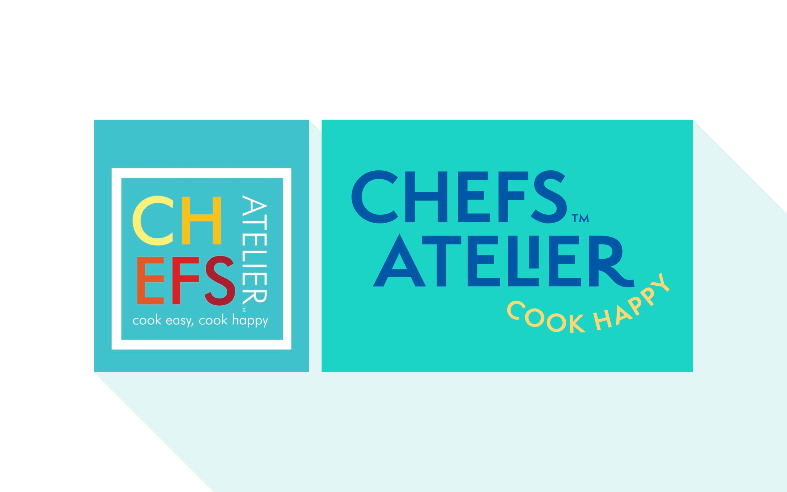
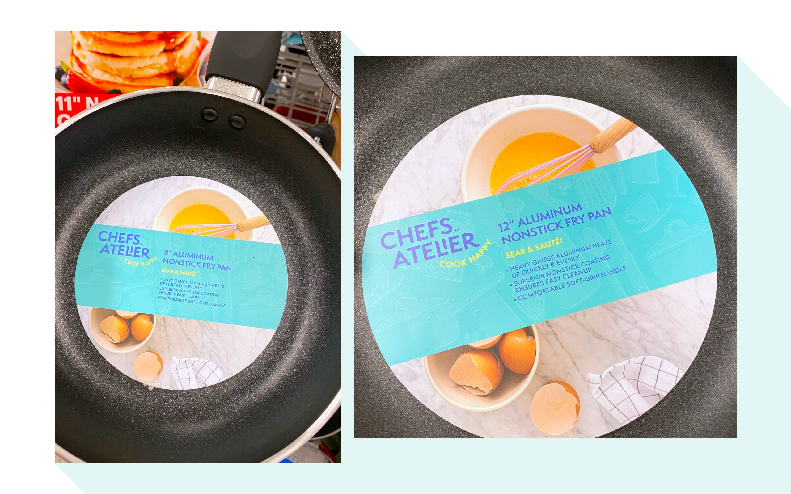
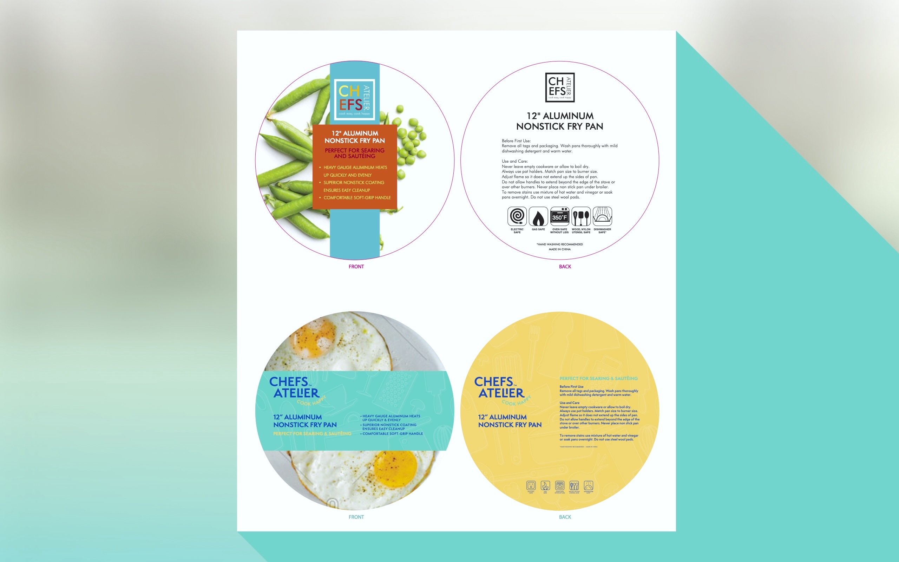
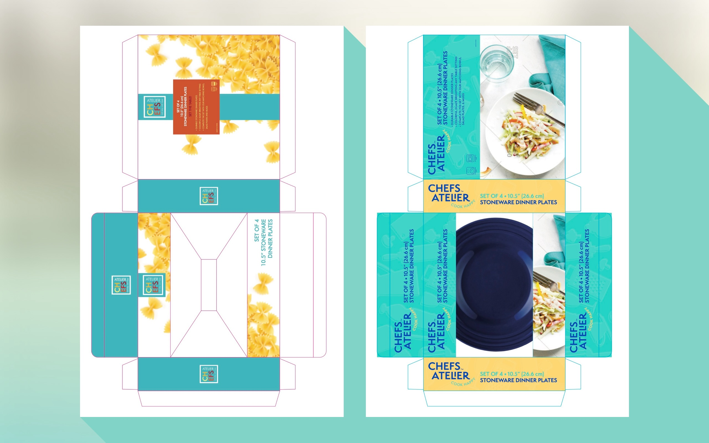
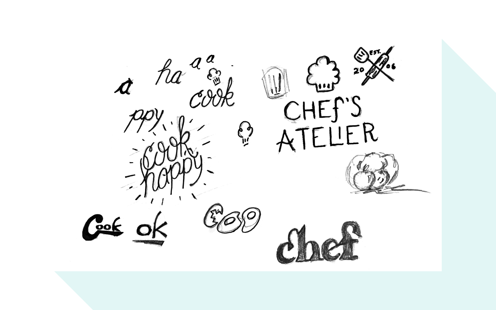
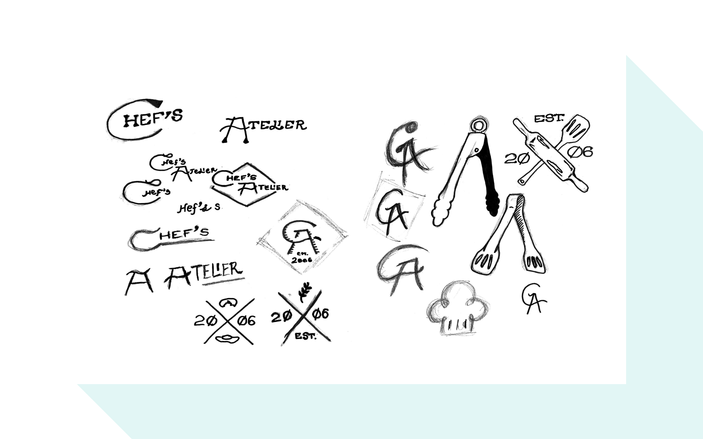
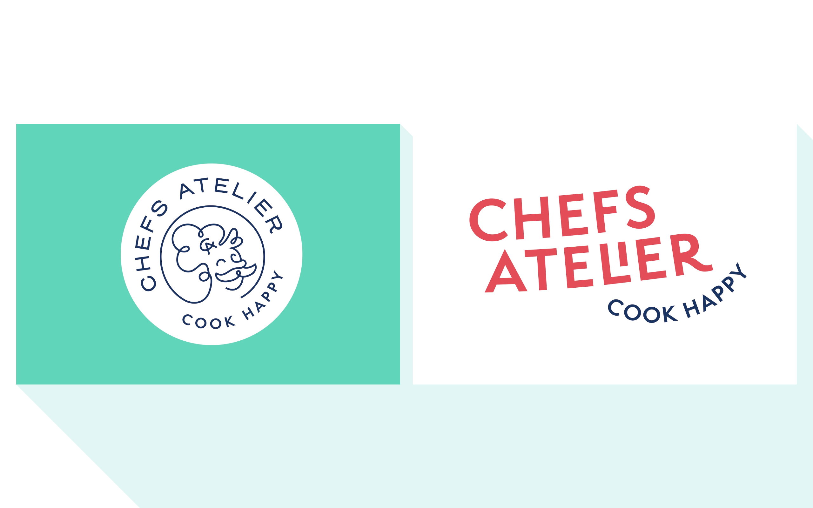
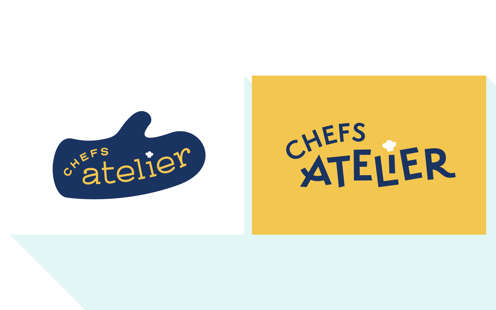

Chefs Atelier
Updating A Home Cooking Brand

Branding, Packaging
Chefs Atelier is a home and cookware brand that emphasizes the fun and accessibility of cooking for people of all ages and skill levels.
Our initial logo designs really played up this idea with playful, upbeat iconography and typography. We reigned in the playfulness of the logo itself throughout the feedback process, and let the bright colors and utensil background pattern handle that role in the final product. The client wanted to retain the teal and yellow palette, so we simplified and punched up the original colors to better-match the new designs.
- Client: Ross Stores, Inc.
- Agency: Graj and Gustavsen

Old and new logo comparison

Frying pan packaging

Old and new frying pan packaging

Old and new plate packaging

Early sketches

More early sketches

Early logo drafts

More early logo drafts